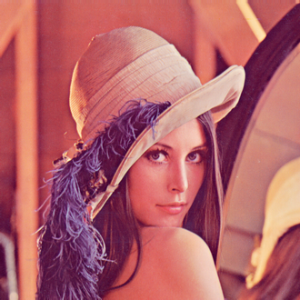

Before Lenna, the first use of a Playboy magazine image to illustrate image processing algorithms was in 1961. Lawrence G. Roberts used two cropped 6-bit grayscale facsimile scanned images from Playboy's July 1960 issue featuring Playmate Teddi Smith (born Delilah Henry), in his MIT master's thesis on image dithering.